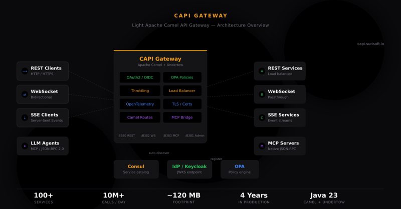

Four years ago, I started writing an API Gateway. Not because I wanted to build a product — but because we needed more from the tools we had.
I was working inside a government institution running a complex hybrid environment — services spread across on-premises data centers and cloud, strict security and compliance requirements, and a growing number of APIs that all needed to be managed, secured, and observed.
We were using a well known API Gateway product, a capable and powerful platform, but for our use case, it was too heavy. The footprint was large, the configuration management at scale was painful, and the licensing costs kept growing. A simple update was always a struggle — it felt like we were fighting the tool instead of using it.
So I did what engineers do when they’re frustrated enough: I built something.
The first version was a PoC
I chose Apache Camel as the foundation — it’s one of the most battle-tested integration frameworks in the Java ecosystem, with dynamic routing capabilities that were exactly what I needed and an amazing, vibrant community behind it. I paired it with Undertow as the WebSocket and SSE gateway for its performance and low overhead, and HashiCorp Consul for service discovery.
The core idea was simple: services register themselves in Consul with metadata that tells the gateway how to route, secure, and throttle them. No database. No YAML configuration files. No admin portal. Just register your service and the gateway picks it up automatically.
That PoC became CAPI — the Camel API Gateway.
The institution I was working with started using it cautiously at first. A few non-critical services. Then more. Then production workloads.
What CAPI looks like today
Today, CAPI routes over 100 services in full production inside a hybrid government environment, handling more than 10 million API calls per day. The runtime footprint is around 120 MB — compared to the 1 GB+ we were dealing with before.
Here’s what it does:
Zero-config routing. Services register in Consul with metadata tags — their context path, security requirements, protocol type, throttling limits. CAPI polls the catalog, creates Apache Camel routes dynamically, and removes them when services deregister. No restarts. No deployments.
Security built in. OAuth2/OIDC token validation from any provider via JWKS endpoints. Fine-grained authorization with Open Policy Agent. Per-service opt-in through a single metadata flag. And because CAPI is built on Apache Camel’s processor pipeline, adding custom validation or integration logic is straightforward — you’re not locked into what the gateway ships with.
Full observability. Distributed tracing via OpenTelemetry OTLP export. Prometheus metrics. OpenAPI spec aggregation from upstream services. All without touching application code.
Everything else you’d expect. REST, WebSocket, and SSE gateway. Round-robin load balancing with failover. Distributed throttling via Hazelcast. TLS termination with dynamic truststore management — certificates can be rotated without restarts, which is critical in environments with strict certificate lifecycle policies. Helm charts for Kubernetes. Admin API for health, metrics, and route inspection.
And recently, something new.
Turning REST APIs into MCP tools for LLM agents
If you’re working with LLMs, you’ve probably heard of MCP — the Model Context Protocol. It’s the emerging standard for how AI agents like Claude, Cursor, and others discover and call external tools.
The problem is: most organizations have hundreds of REST APIs, and none of them speak MCP. The typical advice is to build MCP Server wrappers for each one. That’s a lot of work.
CAPI now solves this differently. Its MCP Gateway turns any existing REST API into an MCP tool — with zero code changes on your backends.
Here’s how it works. You register your REST service in Consul with some additional metadata: the tool name, a description, and an input schema. CAPI reads that metadata and exposes it through a standard MCP endpoint. When an LLM agent calls tools/list, it gets back a catalog of every tool available. When it calls tools/call, CAPI translates the JSON-RPC request into a plain HTTP POST to your backend, wraps the response in MCP format, and sends it back.
Your REST API never sees JSON-RPC. It just handles normal HTTP requests, the same as always.
For services that already speak MCP natively, CAPI proxies them transparently — with load balancing, failover, and the same security policies. Both REST and native MCP backends are aggregated under a single /mcp endpoint.
This is different from dedicated MCP gateways that require all backends to be MCP Servers. CAPI bridges existing REST infrastructure and LLM-native protocols. It meets your services where they already are.
Why I’m sharing this now
For most of its life, CAPI has been an internal tool — built for a specific environment, solving specific problems. I recently rewrote it from scratch, dropping Spring Boot entirely. The trigger was Spring Boot 4 deprecating the Undertow starter. Undertow is core to CAPI — it handles all our WebSocket, SSE, gRPC, and MCP traffic directly. We couldn’t drop it, so instead we dropped the framework dependency and took full control of the runtime. The transition was smoother than you might expect — the Apache Camel Context already provides everything you need for full route lifecycle management, from creation to removal to monitoring. Spring Boot was adding convenience, not capability.
The new version is open-source under Apache 2.0. It’s on GitHub, it has documentation, Docker Compose for a full-stack quickstart, and Helm charts for Kubernetes.
If any of this resonates — whether you’re dealing with gateway complexity, looking at MCP integration, or just curious about building something like this on Apache Camel — I’d like to hear from you.
- Project: github.com/surisoft-io/capi-core
- Website: capi.surisoft.io
- Contact: capi@surisoft.io
CAPI is open-source under the Apache 2.0 license. If you find it useful, a GitHub star helps more than you’d think.